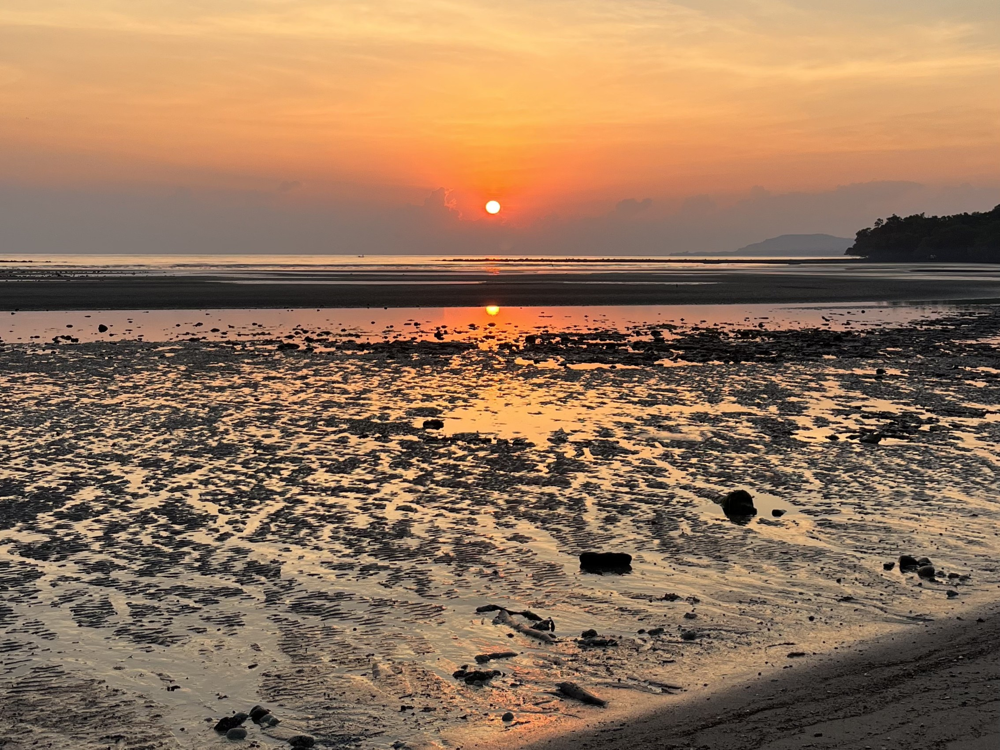
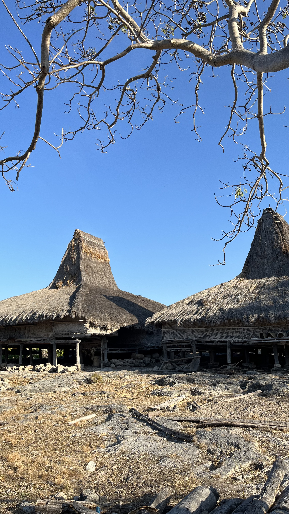
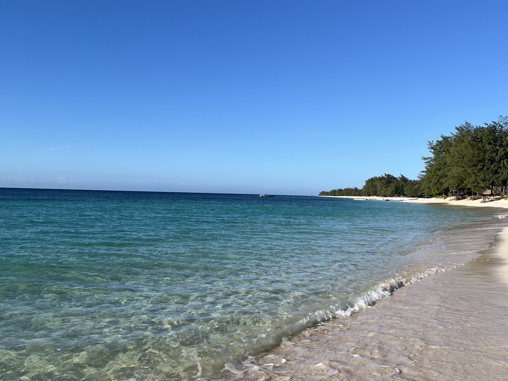
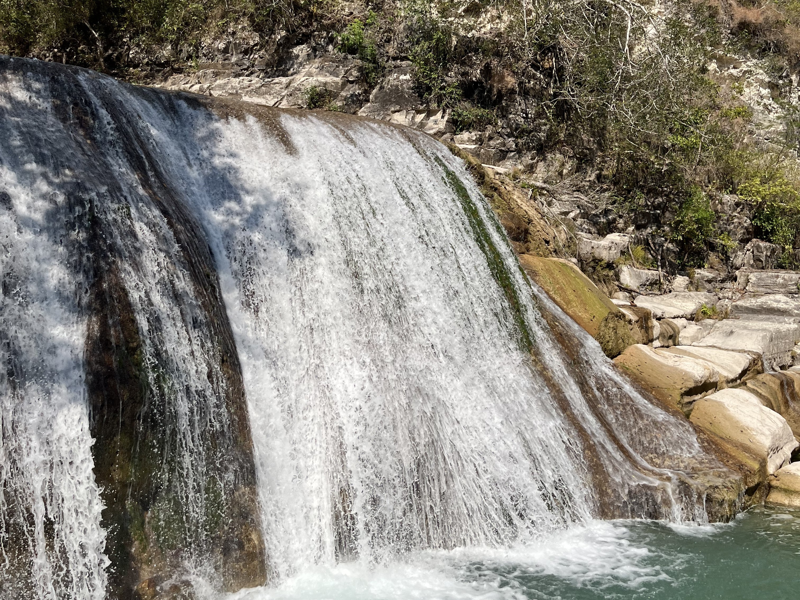

Alam
Pantai Kapihak
Hamparan pasir putih yang terbentang luas dengan ombak biru jernih dan karang yang disertai dengan hutan mangrove.
Selamat datang di jelita.kanatang — Website Desa Wisata dan UMKM Mondu. Alam yang memukau, budaya yang lestari, produk lokal yang berdaya saing
Explore Sekarang




Desa Mondu terletak di Kecamatan Kanatang, Kabupaten Sumba Timur, Nusa Tenggara Timur. Dikelilingi oleh bentang alam savana dan perbukitan hijau yang asri, Desa Mondu menyimpan kekayaan alam dan budaya yang luar biasa.
Masyarakatnya masih menjaga tradisi Marapu — kepercayaan asli leluhur — yang tercermin dalam upacara adat, arsitektur rumah tinggi bermenara, hingga kain tenun ikat yang sarat makna filosofis.
Melalui program KKN PPM UGM Bentang Kanatang, potensi desa dikembangkan menjadi destinasi wisata yang berkelanjutan, memberdayakan masyarakat lokal dan memperkenalkan keistimewaan Desa Mondu ke khalayak lebih luas.
Empat pilar keistimewaan yang membuat Desa Mondu layak menjadi destinasi pilihan Anda.
Nikmati keindahan alam tropis — dari pantai bertebing dramatis, air terjun tersembunyi, hingga savana luas yang memukau saat golden hour.
Telusuri situs megalitik, rumah adat Marapu, dan ritual leluhur yang masih dijalankan — warisan budaya Sumba yang tak ternilai harganya.
Dukung para pengrajin dan pelaku usaha lokal. Setiap pembelian produk UMKM Desa Mondu berkontribusi langsung pada kesejahteraan masyarakat.
Panduan wisata lengkap, peta interaktif, dan informasi UMKM dalam satu portal — memudahkan perjalanan Anda ke Desa Mondu.
Temukan pengalaman wisata autentik yang memadukan keindahan alam dan kekayaan budaya Sumba Timur.
Hamparan pasir putih yang terbentang luas dengan ombak biru jernih dan karang yang disertai dengan hutan mangrove.
Kampung Adat salah satu penghasil kain tenun di Kanatang, Warisan budaya yang sarat nilai sejarah dan spiritual.

Curug tersembunyi di tengah savana dengan kolam alami yang jernih. Rasakan kesegaran dan ketenangan alam yang belum banyak dijamah wisatawan.

Salah satu kawasan budaya di Desa Mondu yang masih mempertahankan kehidupan adat dan kepercayaan Marapu secara kuat
Pantai Purukambera merupakan salah satu destinasi wisata bahari yang memiliki daya tarik berupa pantai yang bersih dengan hamparan pasir putih yang lembut
Cita rasa asli Sumba Timur — dibuat dengan tangan, dibesarkan dengan hati.
Karya tangan para pengrajin Desa Mondu — sarat makna, tinggi nilai seni.
Didukung oleh institusi dan organisasi yang berkomitmen terhadap pengembangan desa.